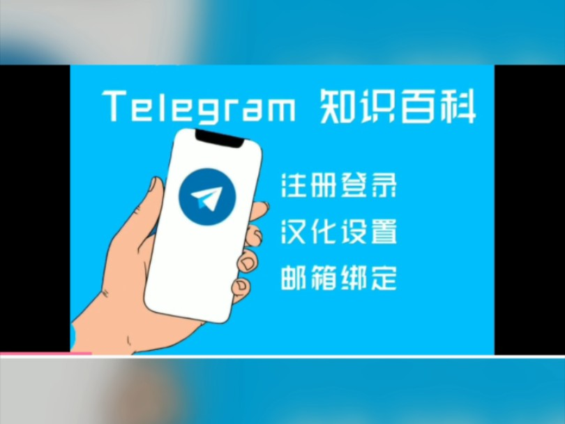

如何利用Telegram全面提升用户体验
在当今迅速发展的通讯应用领域，Telegram以其强大的功能和卓越的用户体验脱颖而出。不仅仅是一款聊天工具，它更是一个强大的协作和社区建设平台。本文将从多个方面详细探讨如何充分利用Telegram的隐藏功能，将其转变为一个高效的沟通、管理和娱乐工具。
Telegram（非正式简称TG、电报、纸飞机）是跨平台的即时通信软件，其客户端是自由及开放源代码软件，但服务端是专有软件。用户可以相互交换加密与自毁消息[注 1]，发送照片、影片等所有类型文件。官方提供手机版（Android、iOS、Windows Phone）、桌面版（Windows、macOS、Linux）和网页版[9]等多种平台客户端；同时官方开放应用程序接口（API），因此拥有许多第三方的客户端[10]可供选择。
2022年6月，Telegram推出了付费的Telegram Premium订阅，标价4.99美元每月。订阅Telegram Premium后可以使用高级贴纸，频道中不会显示赞助广告，最多加入频道数量相较未订阅数量翻倍，更快的下载速度等额外功能。
1. 与其他应用程序的无缝集成
Telegram的API功能允许用户将其与其他工具（如Google日历或社交媒体平台）集成。这种集成带来了以下几种可能性：
-
提醒和通知：通过API设置提醒通知，例如为会议、活动或任务发送即时提醒。
-
多渠道警报：跨多个社交平台自动发送警报信息，提高信息传递效率。
这种功能特别适合企业用户或团队项目管理，使通信和任务管理更加简洁高效。
2. 文件共享与存储的便捷性
随着远程办公和在线协作的普及，Telegram的文件共享功能在香港市场显得尤为重要。无论是跨境贸易中的文档传输，还是本地创作者共享高清多媒体内容，Telegram都提供了一个便捷高效的平台。
在香港，很多设计师、摄影师会通过Telegram发送高达2GB的大文件，而企业则利用“已保存信息”功能存储重要数据，确保随时随地访问。
Telegram允许用户发送最大2GB的文件，为团队协作和共享提供了极大便利。以下是一些高效利用的方法：
-
文件分类存储：在聊天中创建特定的文件夹，用于存放文档、图片或视频，方便随时访问。
-
跨设备文件同步：通过“保存的消息”功能，轻松同步文件到其他设备，确保重要信息永不丢失。
对于需要共享高质量内容或大文件的用户，Telegram是理想的解决方案。

3. 构建活跃的社区
此外，香港用户还会利用Telegram的学习与教育群组，分享国际学术资源、组织考试辅导以及安排知识竞赛。这种高效的协作方式吸引了越来越多的香港学生和教育从业者。
Telegram的机器人和自动化功能已经深入香港的社群管理和文化活动中。例如，本地的活动组织者可以通过机器人发布活动行程表、处理报名信息，甚至在语音聊天室中与参与者实时互动。
Telegram支持最多20万成员的群组，是社区建设和管理的理想平台。为了最大化利用这一功能，可以从以下几个方面入手：
-
制定明确的群组规则：为成员提供清晰的行为规范，营造欢迎和互动的氛围。
-
定期组织活动：在群组内组织问答会、讨论会或民意调查，增强成员参与感和社区凝聚力。
-
分享有趣内容：发布与社区兴趣相关的信息或趣闻，保持对话的活跃度，同时鼓励成员分享自己的故事和见解。
这样的群组管理策略可以显著提高用户粘性，让社区更加生机勃勃。
4. 数据安全与隐私保护
秘密聊天是专为那些比一般人希望获得更高安全性的人们所设计的功能。秘密聊天的内容全部都是以直接的端到端加密来传输。这代表只有你与秘密聊天的对方，才能读取到这些聊天消息 － 没有任何其他人可以破解它们，包含Telegram团队本身。此外，秘密聊天消息也无法被转寄。而你也可借由设置在对方读取消息后的特定时间，自动销毁消息内容，这样一来不论你或者对方设备上的该消息就会永久消失。
秘密和一般聊天之间的最后一个区别就是，秘密聊天的内容不会存储在云端服务器。你只能从秘密聊天双方的设备中访问这些消息。

在香港，用户对数据隐私的重视程度较高。Telegram凭借其“秘密聊天”功能和端到端加密技术，为香港用户提供了重要的隐私保护。无论是企业高管传递商业机密，还是个人用户分享私人信息，Telegram的安全功能都能有效保障数据安全。
尤其在香港特殊的网络环境下，Telegram允许用户通过用户名联系他人，无需公开电话号码。这不仅方便了本地的商务沟通，还为希望保持匿名的用户提供了安全保障。
在隐私和数据安全日益重要的时代，Telegram以其强大的加密技术赢得了用户的信赖。以下是它在保护隐私方面的突出特点：
-
端到端加密：秘密聊天功能确保只有发送者和接收者能够查看消息内容。
-
消息自毁功能：允许设置消息的存续时间，到期后自动删除，确保敏感信息不被长期保留。
-
隐藏电话号码：通过创建唯一用户名与他人互动，保护个人联系方式的隐私。
这些功能对那些注重隐私的个人用户或需要高安全性通信的企业尤为重要。
5. 利用机器人简化管理
在2015年6月，Telegram开放了机器人API[60]，更在2017年5月支持了付款功能[61]。机器人是Telegram上以程序运作的账号，可以回复人类的指令、消息，视开发者设置而异。
另一种功能称为内联机器人[62]，支持快速发送相关的GIF动图、图片，其来自网络、YouTube影片、维基百科的文章，等等。
Telegram机器人（Bots）是一个强大的工具，可以帮助自动化许多任务，从而提升效率和用户体验。以下是一些常见的应用场景：
-
任务管理：通过机器人分配和跟踪任务，例如创建待办事项列表或发送提醒通知。
-
增强互动性：使用机器人创建投票、测验或调查，收集成员意见并保持对话的动态性。
-
客户支持：设置客户服务机器人，提供自动回复和问题解答，为企业用户提供便捷的客户支持解决方案。
通过开发和部署功能强大的机器人，Telegram可以成为高效的业务和社区管理工具。
6. 语音聊天与实时讨论
这采用了跟秘密聊天相同的端到端加密技术，在网络环境许可的情况下，会采用点对点网络传输，否则会经由最近的服务器连线。
2020年8月15日，Telegram添加了端到端加密的视频通话。还提供画中画模式，以便用户可以在通话的同时选择使用应用程序的其他功能。
2021年6月，Telegram在其所有客户之间实施了群组视频通话。用户可以从他们的相机流式传输视频、共享他们的屏幕或同时进行。该公司表示，群组通话的人数上限为30人，并将“很快”提高上限。组呼支持选择性屏幕共享、分屏视图和改进的噪声抑制。2021年7月，Telegram的更新引入了最多1000人观看流媒体视频的能力。
Telegram的语音聊天功能为群组用户提供了一种实时讨论的方式，类似于非正式的播客。以下是使用这一功能的建议：
-
灵活参与：成员可以根据自己的时间随时加入或退出语音聊天，而无需像传统会议那样严格安排时间。
-
增强社交互动：通过语音聊天建立更个人化的联系，例如举办非正式讨论会或分享会。
-
适应现代生活：无论是团队协作还是社交娱乐，语音聊天都是一种高效且方便的沟通方式。
7. 创造独特的用户体验
为了支持各种不同的系统平台，它提供多个客户端版本，并允许各地好手开发自己的版本。它的服务器系统分散并且分布在全球各地，以地理位置自动分配服务器，加快全球回应速度[74]。以下列出官方研发团队与社群研发人员提供的应用程序版本。
Telegram的另一个亮点是其可定制的用户体验，以下是一些提升个性化体验的方法：
-
个性化用户名：通过设置独特的用户名，与他人互动时无需暴露电话号码，非常适合希望保持匿名的用户。
-
自定义背景：为聊天界面选择或创建个性化的动态背景，让每次对话都充满乐趣和个性。
-
使用“保存的消息”功能：将重要内容存储到个人聊天中，方便随时查看和整理。
这些小功能不仅提升了实用性，也为用户提供了更大的自由度和创意空间。
8. 持续优化与改进
最后，定期分析群组活动和用户反馈至关重要。以下是一些建议：Telegram下载
-
分析数据：通过观察群组活跃度和互动模式，找到效果最佳的内容类型和沟通策略。
-
鼓励反馈：邀请成员分享意见和建议，让他们感受到自己是群组发展的一部分。
-
不断迭代：根据分析结果和用户反馈，调整策略，打造一个不断进化的社区平台。
结语
Telegram中文不仅仅是一个通讯应用，它更是一个多功能的平台，能够满足个人和团队的多样化需求。从隐私保护到社区建设，再到与其他工具的无缝集成，Telegram为用户提供了丰富的功能和无尽的可能性。
通过充分利用这些功能，您不仅可以优化自己的使用体验，还可以为他人创造一个更高效、更有趣的互动环境。所以，快来探索这些隐藏功能，发现Telegram真正的潜力吧！